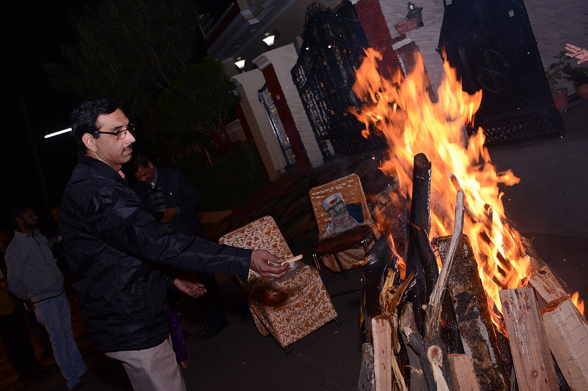

Agni & Surya
The Lohri fire is treated with reverence — offerings into the flames echo older Agni rites, while the next day’s Sankranti turns the eye to Surya.

लोहड़ी
Punjab’s winter harvest fire — songs, sesame, and gratitude around the bonfire.
लोहड़ी पंजाबी शीतकालीन फसल पर्व है — प्रायः मकर संक्रांति की पूर्व संध्या। परिवार अलाव के चारों ओर तिल–गुड़–पॉपकॉर्न अर्पित करते हैं और समृद्धि के गीत गाते हैं।
Lohri is the Punjabi mid-winter harvest festival, usually the night before Makar Sankranti. Families gather around a bonfire, toss sesame, jaggery, and popcorn into the flames, and sing of prosperity, new births, and the turning of the cold season.
लोकस्मृति लोहड़ी को दुल्ला भट्टी की कथा से जोड़ती है — जो कमज़ोरों की रक्षा के लिए गाए जाते हैं। बच्चे की पहली लोहड़ी या नवविवाहितों की लोहड़ी विशेष उत्साह से मनाई जाती है।
Folk memory links Lohri to the legendary Dulla Bhatti, who is remembered in song for protecting the vulnerable — a reminder that harvest joy should include justice and community care. For many households, a child’s first Lohri or a newlywed’s Lohri is especially festive.
लोहड़ी लोक–क्षेत्रीय है, पर संक्रांति की सौर कथा के साथ बैठती है — अग्नि शुद्धि, तिल ऊष्मा, और समुदाय का आभार–मंडल।
While Lohri is deeply regional and folk-rooted, it sits beside the solar mythology of Sankranti: fire as purity, sesame as warmth, and the communal circle as a living mandala of thanks to nature’s cycles.
The Lohri fire is treated with reverence — offerings into the flames echo older Agni rites, while the next day’s Sankranti turns the eye to Surya.
विदेश में गुरुद्वारे और पंजाबी संस्थाएँ लोहड़ी रातें रखती हैं। नियमों के अनुसार अलाव; अन्यथा सुरक्षित दीप और सामुदायिक भोजन।
Gurdwara and Punjabi associations abroad host Lohri nights with folk dance and fire pits where local rules allow. Indoor candle/LED ‘fires’ and community langar-style meals are common alternatives.
Save this festival to My Board to track ticks there.
Punjab’s winter harvest fire — songs, sesame, and gratitude around the bonfire.
Light a safe bonfire or community fire; circle and sing Lohri songs Offer rewri, gajak, popcorn, and peanuts into the fire Celebrate first Lohri of a child or newlyweds with gifts Share sarson da saag, makki di roti, and winter sweets
While Lohri is deeply regional and folk-rooted, it sits beside the solar mythology of Sankranti: fire as purity, sesame as warmth, and the communal circle as a living mandala of thanks to nature’s cycles.
Help us validate this page: suggest a correction, add a detail, or highlight something useful for home puja readers.
Feedback is emailed to TirthaYatra for editorial review. It is not published live automatically (safer for quality and ads policy). You can also keep a personal copy on this device.